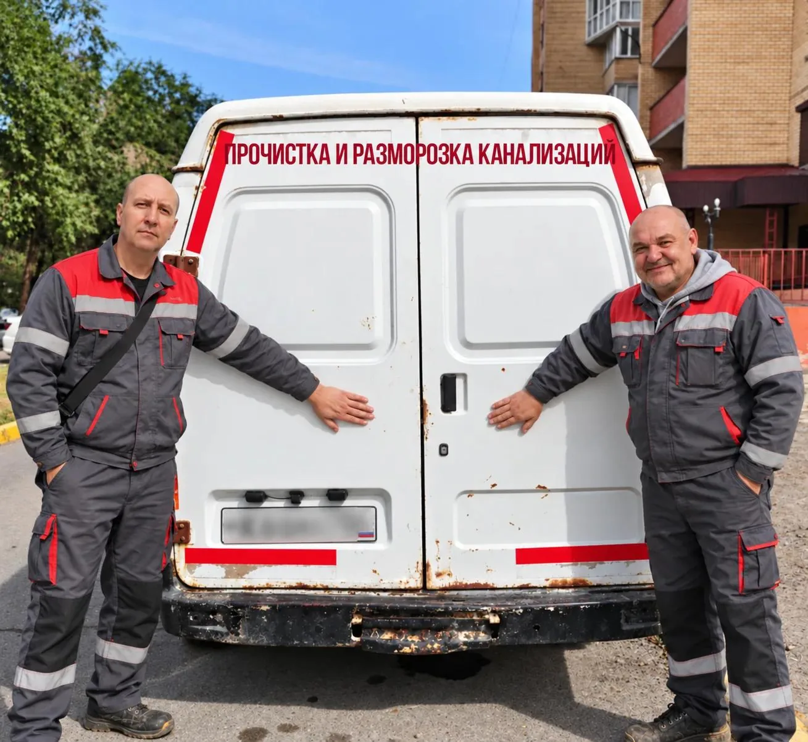
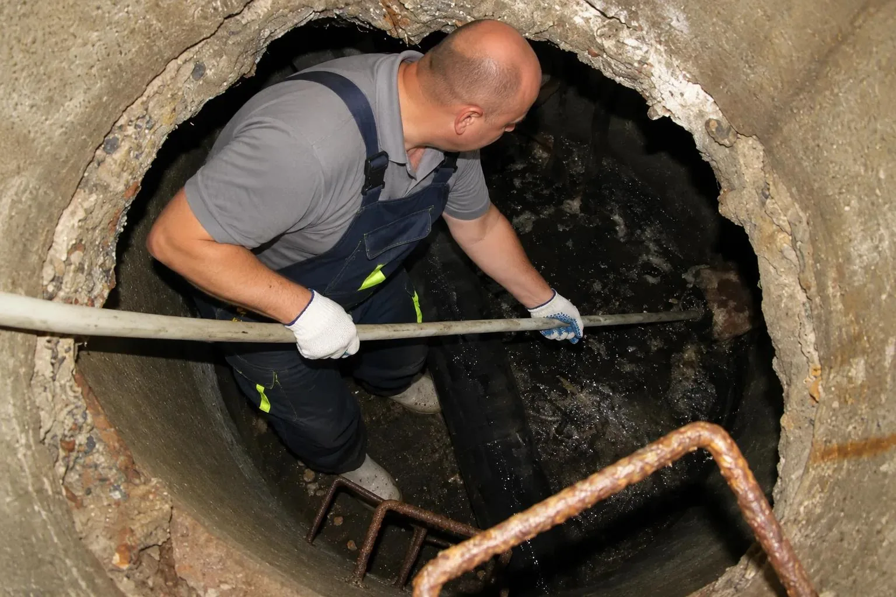

Прочистка и разморозка канализации
Прочистка гидродинамикой и тросом, отогрев замёрзших труб. Квартиры, частные дома, кафе, магазины

С чем к нам обращаются
устраняем засор в колодце

вода уходит медленно или стоит в раковине, ванне, унитазе
забился выпуск, вода не уходит, засор после зимы или простоя
жир и остатки в трубах, нельзя ждать до утра
устраняем засор на объекте
отогреваем замёрзшую канализационную трубу
Что в итоге
канализация работает, вода уходит
называем по телефону после вопросов про метраж и доступ к трубе
на звонок отвечает тот, кто потом приедет
гидродинамикой, тросом или отогревом, смотря что случилось